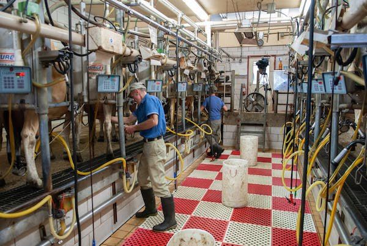
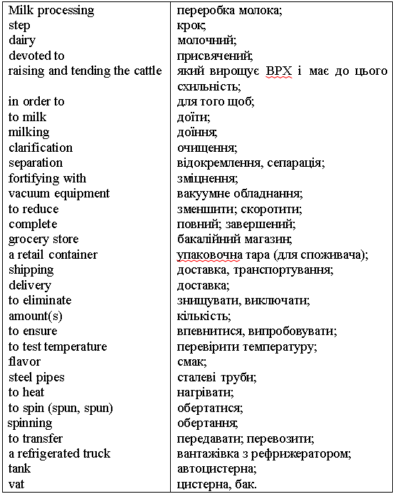

Lesson 13
UNIT 3
Livestock processing technology
BASIC PROCESSING TECHNOLOGIES OF ANIMAL PRODUCTS

Processing of milk
Learn the active vocabulary of the Lesson and be ready to
use it in your further work:
Processing
n – обробка; технологія; homogenized
adj – гомогенізований; pasteurized
adj – пастеризований; sterilized
adj – стерилізований; evaporated
milk – згущене молоко; skimmed
milk – збиране молоко; semi-skimmed
milk – напівзбиране молоко; liquid
milk – питне молоко; almost
all – майже весь; to
break up (broke, broken) v – розбивати; fat
globule – жирова кулька; distribute
v – розподіляти; rise
v – піднімати(ся); so
that – для того щоб; a
creamy layer – вершковий прошарок; top
n – верхівка; similar
adj – схожий, подібний; remove
v – усувати; form
n – форма; heat
treatment – теплова обробка; heat
v – нагрівати; disease-causing
– хвороботворний; bottle
n – пляшка; bottle v – розливати (в пляшки); destroy
v – руйнувати; low
temperature – низька температура; can n – банка (металева); loss n – втрата; quality
n – якість; fat-soluble
– жиророзчинний; affect
v – впливати;
вражати; partially
adv – частково; deg
C (degrees Celsius) – градусів Цельсію. Read
and translate the text: PROCESSING
OF MILK In
homogenized milk the fat globules are broken up and distributed so that they no
longer rise to form a creamy layer at the top of the milk bottle. The
nutritional value of such milk is similar to that of pasteurized
milk. In
skimmed milk almost all of its fat is removed. Semi-skimmed milk contains only
1.5 per cent of fat. Pasteurization
of milk is a form of heat treatment when milk is heated to about 72 deg C for 15
seconds, and all disease-causing bacteria are destroyed. Sterilized
milk is prepared from homogenized milk which is bottled and then
heated
to about 120 deg C for about an hour. During this process about 60 per cent of
the
vitamin C and 20 per cent of the thiamin are destroyed. Evaporated
milk is prepared by the concentration of liquid milk at low temperatures. The
milk is sterilized in cans at 115 deg C for 15 minutes. The nutrient
losses
are similar to those in sterilized milk. To
improve the keeping quality of liquid milk, various heat treatments can be
used.
The fat, fat-soluble vitamins, carbohydrates and minerals of milk are usually
not affected by heat. The vitamins in milk which are partially destroyed by heat
processing are vitamin C, thiamin, pyridoxine, vitamin B12, and folic
acid. GRAMMAR
EXERCISES I.
Answer the following questions: 1.
Are the fat globules broken up in homogenized milk? 2.
What is the nutritional value of homogenized milk? 3.
In
skimmed milk almost all of its fat is removed, isn’t it? 4.
How much fat does semi-skimmed milk contain? 5.
Is pasteurization of milk a form of heat treatment? 6.
Is the temperature by milk pasteurization 72 deg C or 120 deg C? 7.
How is sterilized milk prepared? 8.
What is the temperature and time regime by milk sterilization? 9.
Is evaporated milk prepared by the concentration of liquid milk at low
temperatures? 10. What
nutrients in milk are partially destroyed by heat processing? II.
Match the heading (Column A) to the paragraph (Column
B):
III.
Translate the sentences with the Passive Voice into Ukrainian:
1.
The fat globules are broken up in homogenized milk. 2.
In skimmed milk almost all of its fat is removed. 3.
Milk is heated to about 72 deg C for 15 seconds by pasteurization. 4.
Sterilized milk is prepared from homogenized milk. 5.
During sterilization about 60 per cent of the vitamin C is
destroyed.
IV.
Match the synonyms in two columns:
V.
Fill in the text “Dairy foods: eat
2-3 portions a day” with the words from the box: DAIRY
FOODS: EAT 2-3 PORTIONS A DAY Dairy
foods, such as (1) milk, cheese, yogurt and fromage frais, are the best source
of (2) _______ for strong bones and teeth, and important for the nervous (3)
_______. They also provide some (4) _______ for growth and repair, vitamin B12,
and vitamin A for healthy (5) _______ . They are particularly valuable foods for
young children, who need (6) _______ versions at least up to age 2. Dairy foods
are also especially important for adolescent girls to prevent the development of
osteoporosis later in life, and for women throughout life generally. To limit
fat intake, adults should choose (7) _______ dairy foods, such as (8) _______
milk and low-fat yogurt. What
is a portion of dairy foods? Some
examples are: • 1 medium-sized glass (200 ml)
milk; • 1 matchbox-sized piece (40g)
Cheddar cheese; • 1 small pot of yogurt;
• 125 g cottage cheese or fromage
frais. Words: Adolescent
– підлітковий; medium-sized
– середнього розміру; cottage cheese – зернений сир (кисломолочний); matchbox-sized – розмір сірникової коробки; fromage
frais – сир (домашній) (a
kind of soft cheese); Cheddar
– чеддер (a kind of hard cheese).
VI.
Use the Future Continuous Tense, instead of the infinitives in brackets:
1.
They (to work) in a dairy factory at the usual time the day after
tomorrow. 2.
I
(to take) my Exam in English at this time tomorrow. 3. Let’s meet at 10 o’clock.
I (to wait) for you in the college lobby. 4. We (to expect) a parcel from London
during the coming week. 5. I (to prepare) a report about processing of cheese in
our college tonight. 6. We (to watch) a new video about the technology of milk
production abroad when
the profeсcor
comes. 7. John (to work) on Saturday from 8 till 10 o’clock. 8. We (to discuss)
this issue at 3 p.m. tomorrow. 9. I (to
cook) cheesecake when my friends come at 5 o’clock.
10. I
(to make) milk cocktails and Ann (to meet) guests.
VII.
Do you want to know more about milk processing? Then read the text “What are the
steps in milk processing?” and name the main technological processes in milk
processing. What new names of the processes did you learn
about? WHAT
ARE THE STEPS IN MILK PROCESSING? 1.
In
most cases, milk processing begins in a dairy. A dairy is a type of farm devoted
to raising and tending cattle in order to use them by milking. After the milk is
collected, it goes through a process of clarification and separation, after
which it it fortified with vitamins. Once fortified, the milk must be
pasteurized with vitamins and homogenized, processes that kill bacteria and
reduce the amount of fat content. Once these procedures are complete, the milk
is ready to be packaged and sold. 2.
On
most dairy farms, cows are milked twice per day. Milking is done using vacuum
equipment that transfers the milk to refrigerated holding tanks. This milk is
later collected by refrigerated trucks that transfer the milk to a processing
facility. Before transport, the drivers check to be sure that the milk in the
refrigerated tanks is suitable
for use, a process normally done by testing temperature and flavor. When the
truck
arrives at the processing plant, milk is pumped from the truck into tanks that
will hold the milk ready for the separation and clarifying process. 3.
Clarification
is a step in milk processing that ensures the milk will be free of bacteria and
debris. Milk is put into large vats that continually spin. The spinning causes
the milk to separate from debris and floating bits of bacteria. After
clarification is completed, the milk is spun once again to separate heavier and
lighter milks. Heavier milks might be used for butter, cream or buttermilk,
while lighter milks are reserved for the majority of table milks. 4. The
next step in milk processing is typically fortifying with vitamins. Most of
the
time, vitamins A and D are pumped into the milk in carefully measured amounts.
Once the vitamins are in the milk, it is ready to be pasteurized. Pasteurization
is an added step that helps kill any remaining bacteria present in the milk.
Pasteurization is usually
done by heating the milk as it passes through steel pipes. 5.
Homogenizing
is a step in milk processing that eliminates some of the remaining milk fat.
This is done by using heat to reduce the size of fat particles. Without
homogenization, fat particles would eventually separate from the milk and float
to the top. 6.
The
final step in milk processing is putting the milk into retail containers. Some
of the containers may be paper cartons, while others are plastic jugs. Most
countries require that milk containers be stamped with dated to indicate their
shelf life. Once the containers are ready for shipping, they are sent to
distribution warehouses where they are kept refrigerated until they are
delivered to grocery stores.
VIII.
Match the words or the word combinations in Columns A and
B:
IX.
Learn the following key words and word combinations.

X.
Make up questions to the text “What are the steps in milk processing?” and get
ready to discuss them with your group mates:
Model: How
many times are cows milked in most farms a day? – Cows are usually milked
twice a day. Is
milk fortified with vitamins A and D before or after pasteurization? – It is
usually done before pasteurization. What
kinds of containers is the processed milk put in? – They use carton papers
or plastic jugs that are usually stamped with the shelf life.
a)
milk tanker __ b)
connecting pipes and fittings __ c)
filter __ d)
pasteurizer __ e)
cream separator __ f)
homogenizer __ g)
refrigerating section __ h)
chilling section __ i)
storage tank __ j)
packing machine __ k)
cold storage __ l) unit
__